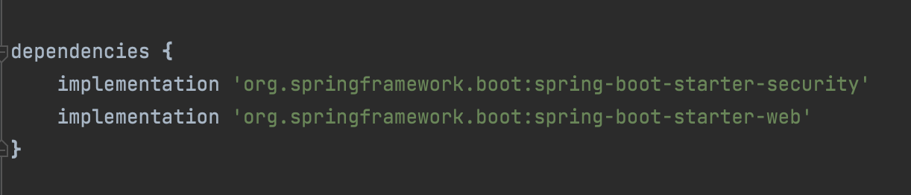
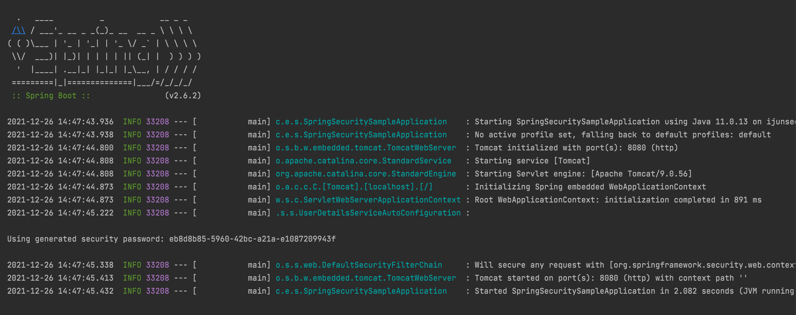
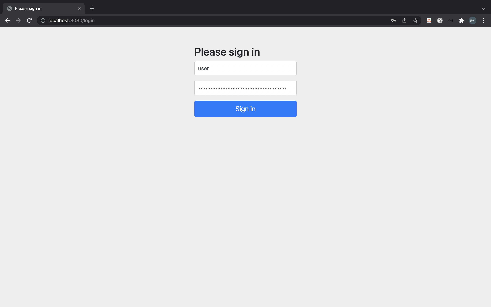
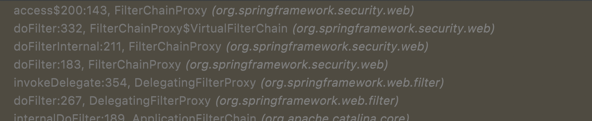
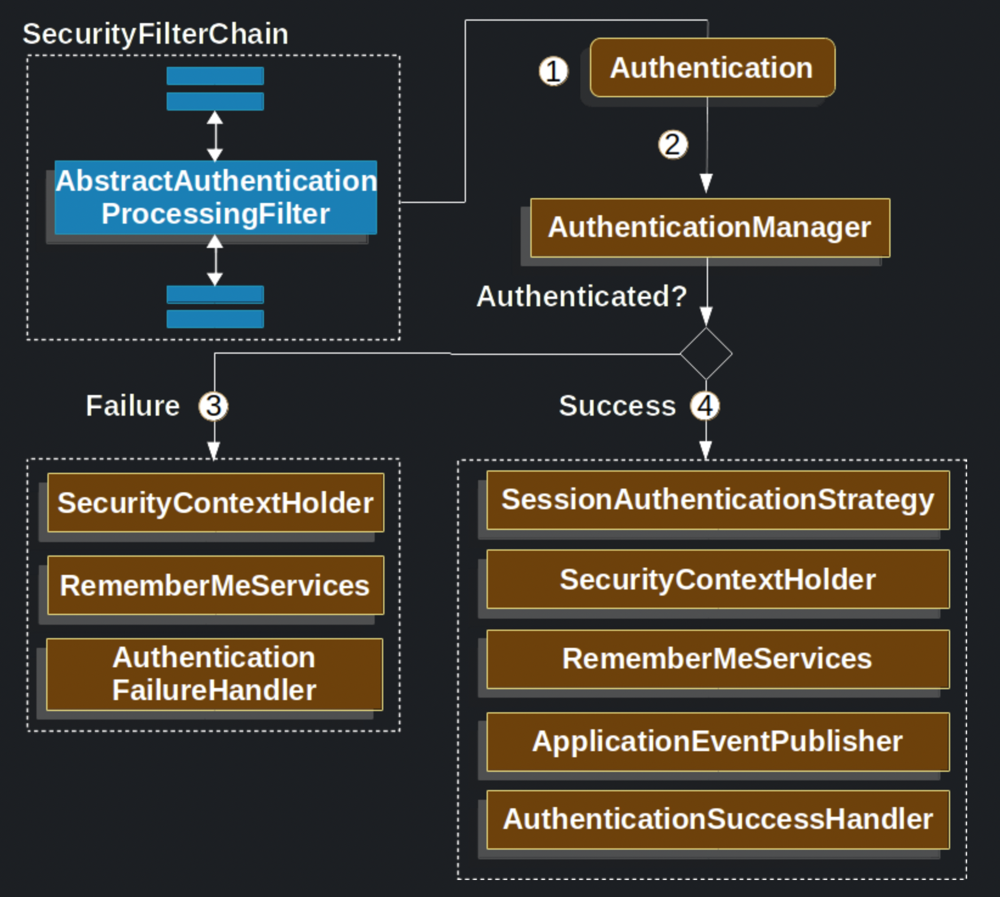
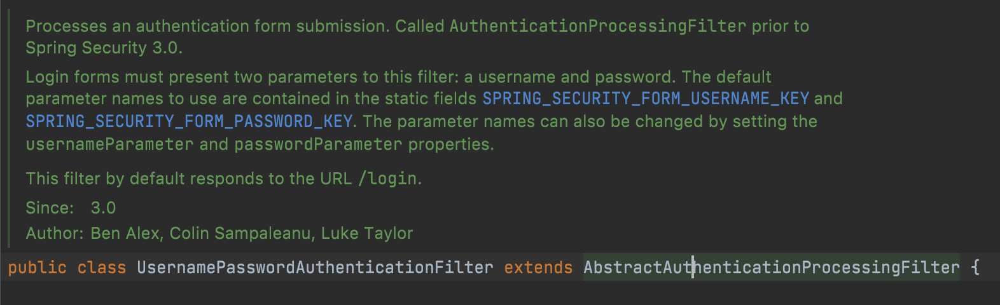

Spring Security는 스프링에서 보안(인증과 인가)기술을 제공하는 스프링 프로젝트 중 하나입니다.
거의 프레임워크에 맞먹는 방대한 크기의 라이브러리인데요, 차근차근 베일을 벗겨가면서 풀어 헤쳐보도록 하겠습니다.
시작하기
먼저 build.gradle파일에 다음과 같이 spring-boot-starter-security 디펜던시를 추가합니다.

별다른 설정이나 코드 작성 없이 바로 어플리케이션을 실행하여 시작해 봅니다. 로그 중간에 랜덤하게 생성된 비밀번호를 확인할 수 있습니다.

localhost:8080에 접속해보면 자동으로 localhost:8080/login으로 리다이렉트 되어진 로그인 페이지를 볼 수 있습니다.

Username으로 user와 Password로 위에 로그에 찍힌 생성된 비밀번호를 입력한 후 로그인 하면 로그인에 성공합니다.
그런데 어떻게 아무런 설정없이 디펜던시를 추가하는 것만으로도 이게 가능해진 걸까요?
그 이유는 스프링 부트가 디펜던시를 추가하는 것만으로도 자동으로 스프링 시큐리티의 아래와 같은 디폴트 설정(configuration)을 활성화 하기 때문입니다.
- springSecurityFilterChain이라는 이름의 서블릿 필터를 빈으로써 생성합니다. 이 빈은 어플리케이션의 모든 보안 관련된 일을 처리합니다.(어플리케이션 URL을 보호하기, 인증이 필요한 사용자를 로그인 페이지로 리다이렉팅시키기, 사용자의 이메일과 비밀번호를 검증하기 등..)
- username으로
user와 password로 랜덤하게 생성되는 비밀번호 값을 가지는 UserDetailsService라는 빈을 생성합니다. - 각 요청마다 springSecurityFilterChain이라는 이름의 빈을 생성합니다.
기본 실행은 여기까지입니다.
아키텍처
스프링 시큐리티는 서블릿 필터 기반의 인증 방식을 사용합니다.
쉽게 말해서, 사용자가 어플리케이션의 어떤 URL에 접근(요청) 했을 때 HttpServletRequest가 내부적으로 Controller에 접근하기 전에 먼저 스프링 시큐리티 필터들의 보안 절차를 통과한다고 보면 될 것 같습니다.
스프링 시큐리티와 관련된 필터의 시작점은 FilterChainProxy입니다. 공식 문서의 그림을 참고하세요.
아래는 FilterChainProxy에 브레이크 포인트를 걸어 놓고 디버그를 실행시킨후 localhost:8080에 접속했을 때 볼 수 있는 콜 스택입니다.

스프링 시큐리티와 관련된 필터는 다음과 같은 순서로 필터를 호출합니다.
인증과 인가
인증: 인증이란 누군가를 식별하는 행위라고 보면 됩니다. 가령 사용자에게 이메일과 비밀번호를 입력하게 함으로써 내부 인증 로직을 통해 접근하는 주체가 누구인가를 식별할 수 있습니다.
인가: 인증된 사용자에 한해서, 어떤 권한이 부여되어 있느냐에 따라 리소스에 대한 접근을 막거나 허락하는 등의 행위입니다.
인증 Authentication
SecurityContextHolder : 스프링 시큐리티 인증 모델에서 가장 중요한 심장부라고 할 수 있습니다. SecurityContext를 담고 있으며, 로그인에 성공한 인증된 사용자의 정보가 저장되는 곳입니다.
SecurityContext: Authentication을 보관하고 있습니다. SecurityContextHolder로부터 얻어올 수 있으며 SecurityContextHolder.getContext()로 반환됩니다.
Authentication: 현재 접근하는 주체(사용자)의 정보와 권한을 담고있습니다. SecurityContext로부터 가져올 수 있으며 SecurityContextHolder.getContext().getAuthentication()으로 반환됩니다.
AuthenticationManager: 인증에 대한 부분은 AuthenticatonManager를 통해서 처리하게 되는데, 실질적으로는 AuthenticationManager에 등록된 AuthenticationProvider에 의해 처리됩니다. 인증이 성공하면 Security Context에 인증이 성공한 객체를 저장하고 인증이 실패한 경우에는 AuthenticationException을 발생시킵니다.
AuthenticationEntryPoint: 접근하는 사용자에게 인증을 요구하는 Http 응답을 보내기 위해 사용됩니다. 예를 들어, 인증되지 않은 사용자가 권한이 필요한 리소스에 접근하려고 할 때 로그인 페이지로 리다이렉팅 시키거나, Http 응답 헤더에 WWW-Authenticate를 실어 보내는 등의 방법이 있습니다.
어느 정도 핵심 개념에 대해서 알아봤으니, 어떤 흐름으로 인증 과정을 거치는지 알아보도록 하겠습니다.
아래 그림은 스프링 시큐리티 공식 문서에서 가져온 그림이고, 그 아래에 번호마다 설명을 달아보았습니다.

사용자가 이메일과 비밀번호를 제출해 로그인(인증) 요청을 하게 되면 AbstractAuthenticationProcessingFilter는 HttpServletRequest로 부터 Authentication을 생성합니다.
이때, Authentication은 AbstractAuthenticationProcessingFilter의 서브 클래스에 의거하여 생성되는데요,
아래와 같이 UsernamePasswordAuthenticationFilter는 HttpServletRequest로 제출된 사용자의 username과 password로부터 UsernamePasswordAuthenticationToken을 생성합니다. (UsernamePasswordAuthenticationFilter가 AbstractAuthenticationProcessingFilter의 서브 클래스이다.)
Authentication이 AuthenticationManager에게 건네 집니다.
인증에 실패할 경우, SecurityContextHolder를 깨끗하게 비웁니다. 그리고 AuthenticationFailureHandler를 호출하여 실패에 대한 로직을 수행합니다.
인증에 성공할 경우, SecurityContextHolder에 Authentication을 보관합니다. (SecurityContextHolder에 Authentication이 있다는 것은 현재 접근하는 주체(사용자)가 인증된 사용자라는 것을 의미합니다.) 그리고 AuthenticationSuccessHandler를 호출하여 성공에 대한 로직을 수행합니다.